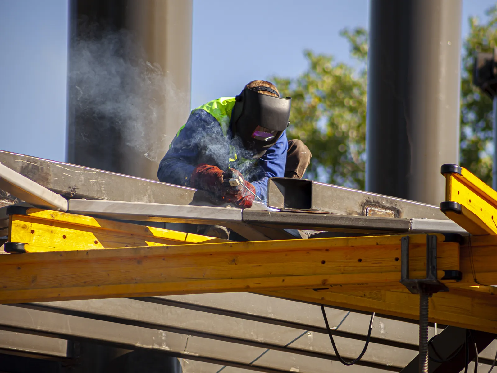

Home · Service Areas · Madisonville
Madisonville, LA Mobile Welders
At Big Easy Mobile Welders, we handle welding for Madisonville homes, docks and businesses without hauling anything to a shop. Our licensed, insured team arrives with a fully equipped mobile unit and repairs steel, aluminum and stainless where it stands.

We come to the jobWhat Does Mobile Welding Service in Madisonville Cover?
Every mobile welding job in Madisonville includes a free, no-obligation estimate, a seasoned welder with a fully equipped mobile unit, prep that grinds the joint back to bare metal, and a satisfaction guarantee with follow-up support once the weld is finished and reviewed with you.
Estimate at No Charge
We look over the job and quote it free, with no obligation and nothing hidden in the price.
Seasoned Welders
Your repair goes to a highly trained welder whose experience spans more than 20 years.
Tools on Site
We arrive with a fully equipped mobile unit, which suits a dock, a gate or a frame that cannot easily be moved.
Bare-Metal Prep
Before welding, we grind and brush away rust and old coatings so the joint is clean.
Many Metals
We weld mild steel, aluminum and stainless steel on jobs large and small.
Payment and Follow-Up
Paying is easy, the work is backed by a satisfaction guarantee and we stay reachable for follow-up support.

What Welding Problems Do Madisonville Owners Call About?
Madisonville property owners call a mobile welder for waterfront and household metalwork alike. Dock framing and boat lift parts wear near the water, older homes carry aging gates and railings, and many properties need a custom bracket, frame or repair that is easier to weld on site than to haul away.
- Worn Dock Framing
- Boat Lift Component Repair
- Rusted Waterfront Railing
- Sagging Yard Gate
- Broken Fence Weld
- Cracked Trailer Tongue
- Loose Porch Handrail
- Custom Aluminum Bracket
- Corroded Steel Post Base
What Mobile Welding Services Reach Madisonville Properties?
In Madisonville, our mobile welding work includes pipe, custom, arc, gate, fence and iron railing welding, plus metal fabrication, specialized jobs and window frame repair. Our welders handle every service at your property, starting each job with a free estimate that carries no obligation.

Pipe Welding
Pipe and pipeline repair on site, with stick and gas-shielded processes matched to the pipe.
View pipe welding →
Fence Welding
Fence repairs and custom fence fabrication, with the material and process chosen for your fence.
View fence welding →
Gate Welding
Gate repairs and custom gates in steel or aluminum, with materials and tools covered in your estimate.
View gate welding →
Iron Railing Welding
Custom indoor and outdoor railings for stairways, decks and balconies, built to fit your property.
View railing welding →
Arc Welding
Shielded and non-shielded arc welding for commercial and residential customers.
View arc welding →
Custom Welding
Custom ironwork, estimated before we start so we arrive with the right equipment for the job.
View custom welding →
How Can You Tell Your Madisonville Property Needs a Welder?
You likely need a welder in Madisonville when metal around a home or dock starts to loosen, crack or corrode through. Near the water, rust can work into joints faster, so catching a failing weld early often means a smaller repair and keeps a minor fault from spreading into the surrounding frame.
Loose Fasteners and Joints
Bolts that keep backing out or a joint that rattles can mean the weld holding a bracket has broken.
Pitting Near the Waterline
Small pits and holes in metal close to the water show corrosion eating into the surface.
Hairline Splits
A fine line running along or beside a weld bead is often the first sign of a crack that will grow.
How Does a River Town Like Madisonville Change Welding Work?
Welding in Madisonville differs because it is a small river town of detached, mostly owner-occupied homes, many of them old, set on the Tchefuncte River with marinas and boating close by. Jobs can shift from an old house's gate or railing to aluminum dock framing or a boat lift on the water.

Madisonville's size, age and riverfront shape the work we plan for.
- Almost All Detached Houses.The Census Bureau's 2020 to 2024 survey counts 95.7 percent of the town's 415 housing units as single-family detached homes.
- Older Than Most.The same survey dates roughly a quarter of Madisonville homes to 1939 or earlier, though estimates for a town this small carry wide margins.
- Owners Live on Site.About 88 percent of occupied homes are lived in by their owners, according to that survey.
- Life on the River.The town lists a lighthouse, marinas and recreational boating, and we take on marine and dockside welding for docks and boat lifts, topside and at the waterline.

Why Use a Local Mobile Welding Team in Madisonville?
A local mobile welding service brings the repair to Madisonville properties, which matters when the metal is a dock, a boat lift or a gate set in concrete. You also work with a locally owned company that has served greater New Orleans for many years and remains easy to reach afterward.
Rooted in the Area
We are locally owned, and Madisonville is one of the 12 cities in our regular service area.
A Shop on Wheels
Our mobile units carry everything needed to weld on site, including at the water's edge.
Proven Welders
Highly trained welders with more than 20 years of experience take on each repair.
Fair, Clear Quotes
Estimates cost nothing, pricing is transparent and payment is easy, with no surprise fees.
What Happens During Mobile Welding in Madisonville?
Mobile welding in Madisonville follows a four-step path. First comes your free estimate request, then an approved price and a weekday booking, then prep and welding where the metal stands, and finally a review of the repair with you and follow-up support whenever questions come up.
Send the Details
Reach us at (504) 370-2757 or through the online form, and attach pictures of the metal when possible.
Book a Weekday Slot
Approve the price, then choose any weekday opening between 8 AM and 3 PM.
Weld at the Site
The welder parks the mobile unit, preps the metal and finishes the weld where the piece is installed.
Check the Result
We go over the repair with you, and you can call us with any follow-up questions.
 The rig comes to you
The rig comes to youWhat Details Matter Most to a Welder Visiting Madisonville?
Before calling a welder in Madisonville, decide what result you want, check what the piece is made of, and note how the mobile unit can reach it, especially for work at a dock or bulkhead. Those details let us quote accurately and arrive with the right process and filler for the metal.
Aluminum or Steel
Our comparison of aluminum and steel welding shows why the two metals need different processes.
Access From Land
Our marine work is done topside and at the waterline, not under water, so the welder needs a safe way to reach the work.
Fix or Fabricate
A repair to an existing piece and a new custom part are planned differently, so let us know which you need.
Can Our Mobile Welders Serve Cities Around Madisonville?
Our mobile welders serve the cities around Madisonville too, including Covington, Mandeville, Slidell and Hammond, as well as Baton Rouge. Across Lake Pontchartrain, the same team covers New Orleans, Metairie, Kenner, Gretna, St. Rose and LaPlace, with the same free estimates and fully equipped mobile units.
- New Orleans
- Metairie
- Kenner
- Gretna
- St. Rose
- LaPlace
- Slidell
- Mandeville
- Covington
- Madisonville
- Hammond
- Baton Rouge
Not sure we cover your street?
Request a free estimate or call us, and we will confirm before we book the job.
Where Our Rigs Roll
Schematic, not to scale. New Orleans and the 11 nearby cities we serve.
About Madisonville
Madisonville is a small town on the banks of the Tchefuncte River, north of Lake Pontchartrain.
The Parish's Oldest Settlement
The town calls itself the oldest permanent settlement in St. Tammany Parish, with French settlers arriving on the Tchefuncte in April 1773.
Population
The 2020 Census counted 850 people in Madisonville, up from 748 in 2010.
Distance to New Orleans
The town places itself about 40 miles from New Orleans.
Things To Do
Most outings in Madisonville involve the river, whether at the maritime museum, a boat festival or a state park.
Maritime Museum Louisiana
The museum shares Louisiana's maritime history through exhibits, boat building and hands-on field trips, and it is restoring the Tchefuncte River Lighthouse.
Wooden Boat Festival
The museum's premier event and main fundraiser each year is the Wooden Boat Festival.
Fairview-Riverside State Park
The 99-acre state park fronts the Tchefuncte River and holds the Otis House, built in the 1880s for sawmill owner William Theodore Jay.
Nearby Suburbs
Madisonville's closest neighbors in our service area are Northshore cities, with New Orleans across the lake.
Covington
Covington, founded in 1813, is the parish seat and describes itself as nestled among three rivers.
Mandeville
Mandeville grew from an 1834 town plan on the north shore of Lake Pontchartrain.
New Orleans
New Orleans, the hub of our service area, lies across Lake Pontchartrain to the south.
Interesting and Fun Facts
Madisonville changed its name once before the town was even incorporated.
Named for Shells
French settlers first called the town Coquille, the French word for the shells found along the river and lake.
Honoring a President
In 1811 the town took the name Madisonville in honor of President James Madison.
Incorporated in 1817
The town was incorporated in 1817, six years after taking its current name.
Public Transportation
Public transportation in Madisonville comes from STAR Transit, the parish's call-in ride service.
- STAR Transit: a parish-run, demand-response service that carries riders to and between essential services and destinations.
- Rural and urban service: rides run Monday to Friday, with the rural service ending at 4 PM and the urban service at 5 PM.
- Long trips: rides of 26 miles or more are booked only if the schedule permits.
- Seniors: riders 60 and older ride free from 7:30 AM to 2:30 PM with COAST registration.
- Young riders: children under five ride free, and passengers under 17 must ride with someone 18 or older.
Where Can Owners in Madisonville Request a Free Welding Estimate?
A free welding estimate in Madisonville is one phone call to (504) 370-2757 or one online form away. Let us know if the work is at the house or on the water, which metal is involved and what failed, and we reply with a no-obligation price and transparent terms.
Loading the estimate form...
If it does not appear, call us at (504) 370-2757.

What Are Common Welding Questions in Madisonville?
Madisonville owners often ask whether docks and boat lifts can be repaired, how humidity affects welding, whether a welder will travel to a rural property, how metal is cleaned, whether old and new metal can be joined, why gates rust quickly, which railing metal suits the water and how old the town is.
Can a welder repair a metal dock or boat lift?
A mobile welder can often repair aluminum or steel dock framing and boat lift parts on site, working topside and at the waterline. We do not take on submerged diving work. Corroded members may need to be cut out and replaced, and we look over the structure before quoting the repair.
Does humidity affect welding?
Humidity can affect welding when moisture settles on the metal or gets into filler and flux, which may cause porosity or cracking. Welders usually dry and clean the joint, store electrodes properly and wait out rain. Humid air also speeds rust on finished welds that are left uncoated.
Will a mobile welder travel to a rural property?
A mobile welder will usually travel to rural properties inside the service area, since the equipment travels in the mobile unit. Madisonville falls inside our regular service area. It helps to describe the driveway, gate access and where the work sits so we can plan how to reach it.
How do you clean metal before welding?
Metal is cleaned before welding by removing rust, paint, mill scale, oil and dirt from the joint, usually with a grinder, wire brush or flap disc. Aluminum also needs its oxide layer brushed off with a stainless brush. Clean metal helps the weld fuse properly and reduces porosity.
Can you weld old metal to new metal?
Old metal can usually be welded to new metal once the old piece is cleaned back to sound, solid material. Both pieces should be compatible, such as steel to steel. Heavily rusted or thin old metal may need a section cut out first so the new piece has something strong to join.
Why is my metal gate rusting so fast?
Metal gates rust fastest where moisture sits: at the bottom rail, the hinge points and welds that were never primed. Bare steel, chipped paint and humid weather speed it up. Cleaning, priming and repainting damaged spots, and keeping sprinklers and soil off the gate, slow it down.
What is the best metal for outdoor railings near water?
Near water, aluminum and stainless steel are usually the most corrosion-resistant choices for outdoor railings. Galvanized or well-coated steel offers strength but needs its coating maintained. The right pick depends on the look you want, the load the railing carries and how much upkeep you are willing to do.
How old is Madisonville, Louisiana?
Madisonville traces its start to April 1773, when French settlers arrived on the banks of the Tchefuncte River. First called Coquille, it was renamed for President James Madison in 1811 and incorporated in 1817. The town describes itself as the oldest permanent settlement in the parish.


Book Your Free Mobile Welding Estimate
Tell us what needs welding, and we will bring the rig to your door anywhere in the New Orleans area.